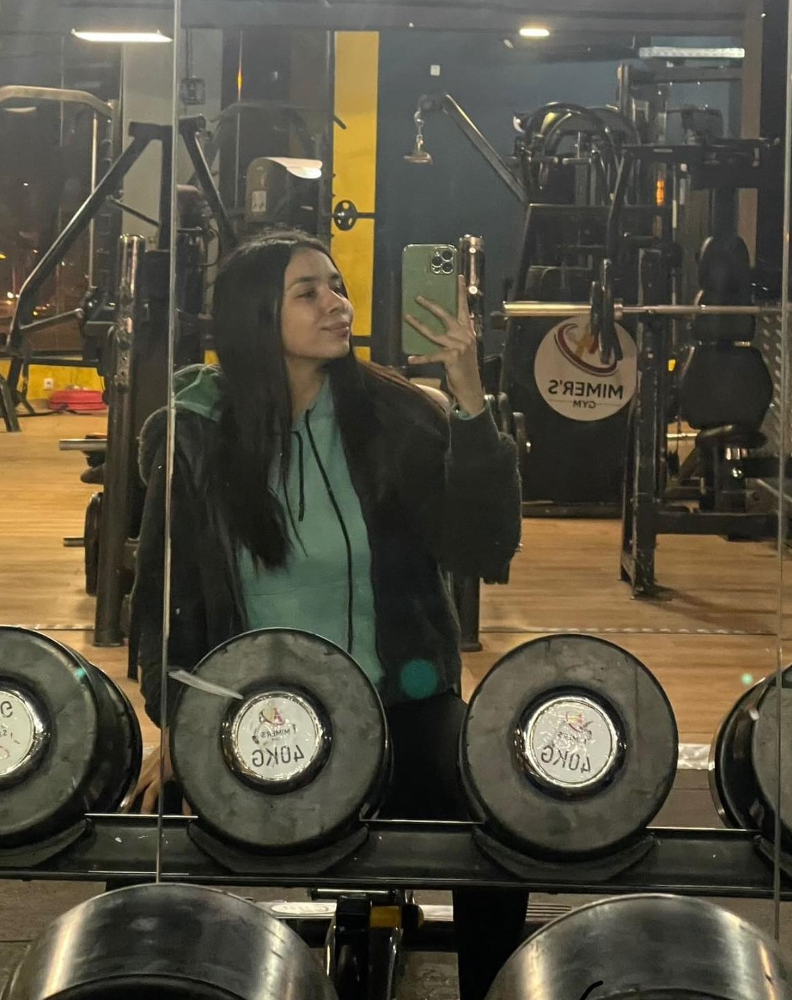

Passions
Sport
Le sport occupe une place centrale dans ma vie, en tant que véritable passion qui transcende les simples activités physiques.

Equitation
L'équitation est une activité qui me transporte dans un monde de connexion profonde avec ces majestueux compagnons à quatre pattes.